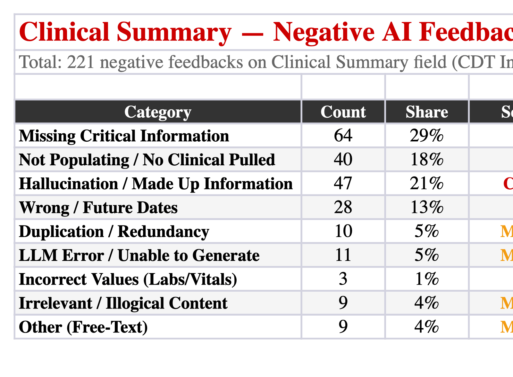
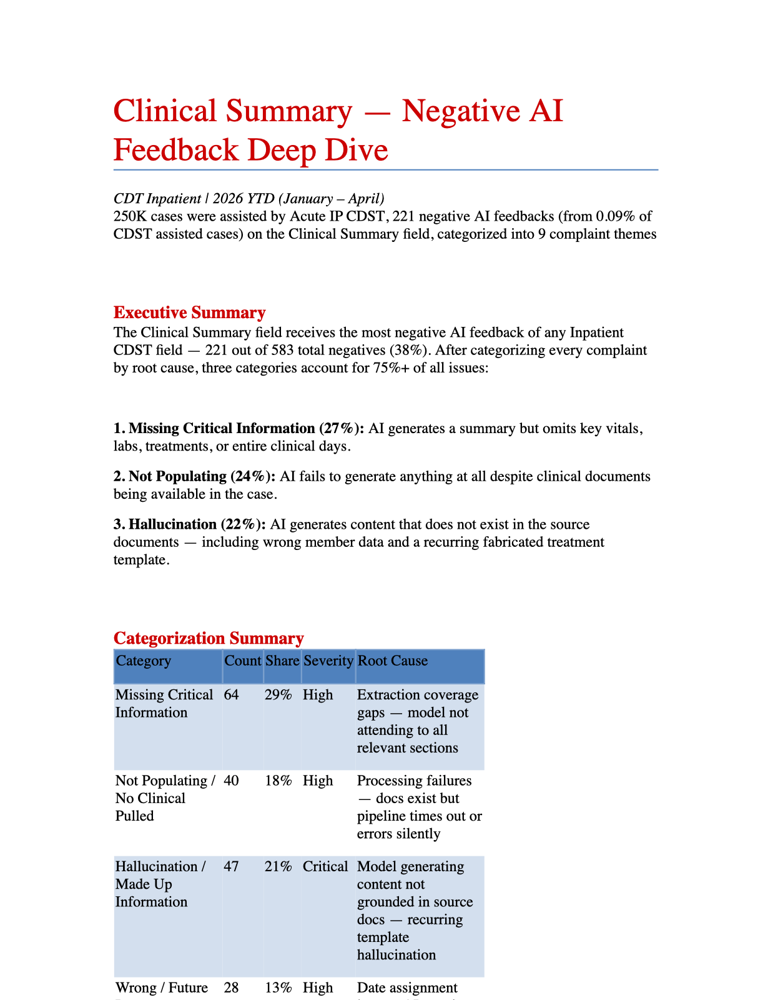
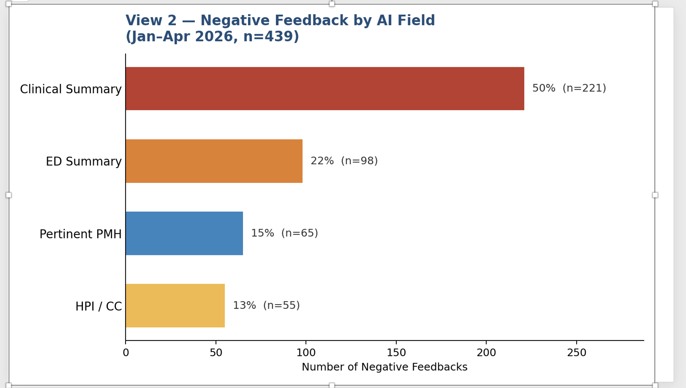
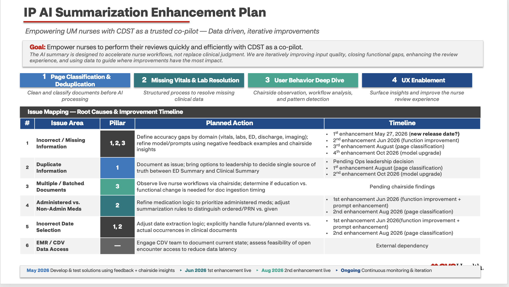
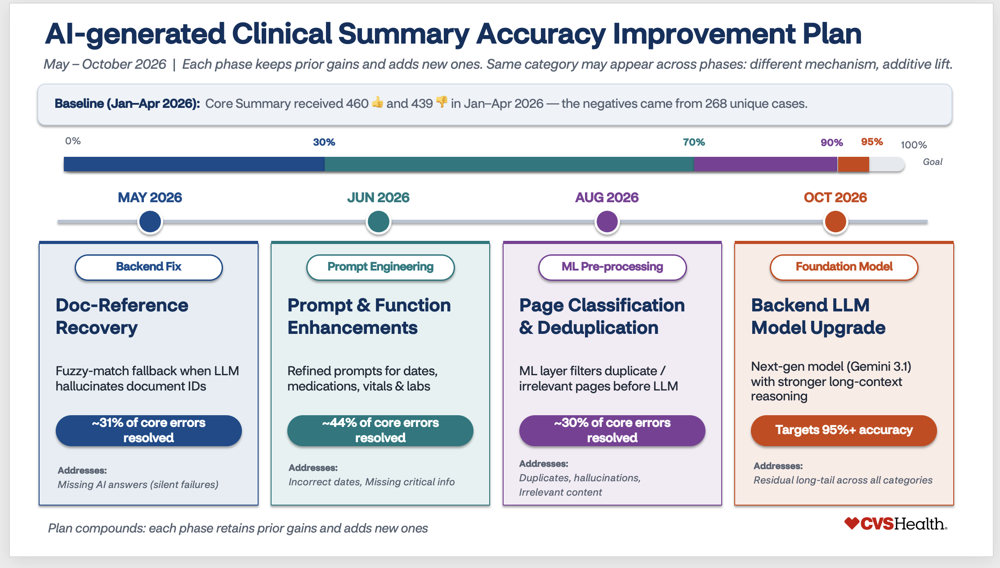
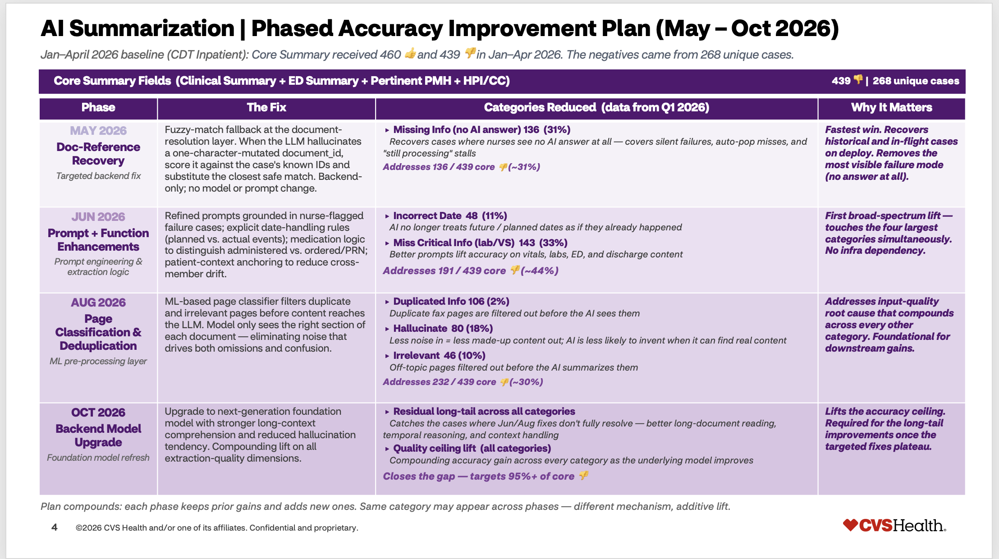
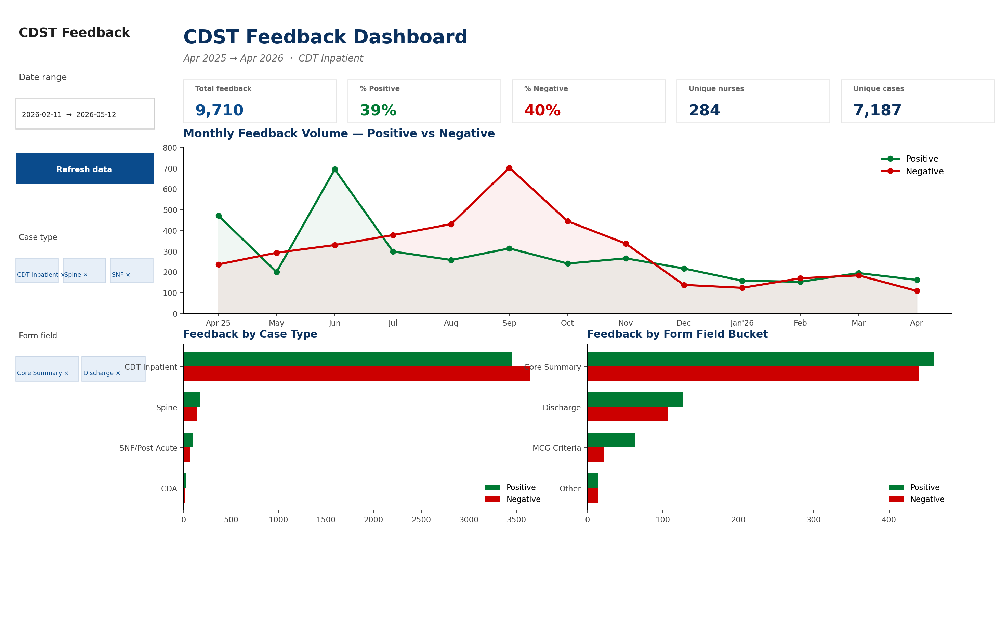
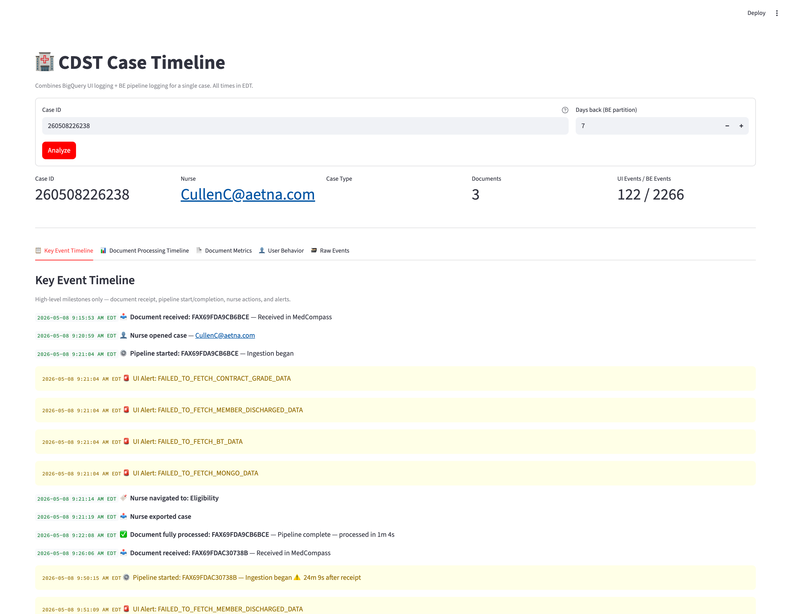
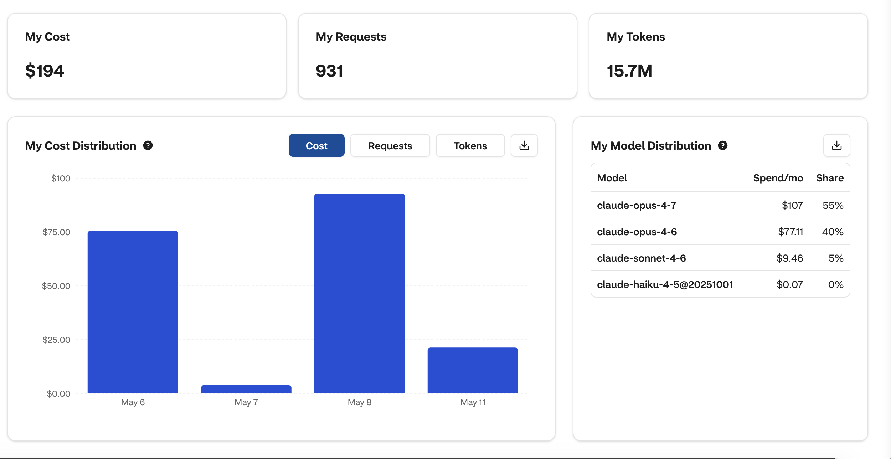

How I shipped a complete Clinical Summary issue analysis & enhancement plan in one day — data-driven, DS-aligned, and almost entirely self-served with AI.
Normally 1–2 weeks. DS pulls data. Eng helps with logs. Product writes the slides. Back-and-forth across three teams. I wanted to compress it to one day — and own the story end-to-end.
BigQuery, via AI
My PM intuition × AI tagging
Excel, Word, and PPT in one prompt
Discuss findings → Claude drafts plan
Pull · categorize · generate the 3 artifacts
Walk DS through findings · agree on fixes
Package the plan · cleanup · final story
Product empowered by AI — more efficient end-to-end
This day is an illustration. To make it a repeatable workflow — and empower other PMs on the team — that's where the dashboards (next slides) come in. Once deployed, anyone can self-serve the same view.
Write & iterate the SQL. Copy between tabs. Cross-check Cloud Logging when numbers look off.
-- iterate, re-iterate, fix typos...
SELECT * FROM `anbc-hcb-prod
.prv_um_cdt_hcb_prod
.clinical_decision_activity
_monitor_results`
WHERE stage = 'feedback'
AND caseType = 'cdt inpatient'
AND DATE(receiveTimestamp)
BETWEEN '2025-01-01'
AND '2026-04-30'
ORDER BY receiveTimestamp;
per data pull
Connect Claude to BigQuery once. Describe what I need.
"give me all feedback rows for cdt inpatient between Jan 2025 and Apr 2026"
Claude writes & runs the SQL. Returns the CSV.
12K+ rows, 16 months of history
Read each negative feedback comment. Decide bucket. Tag. Rinse, repeat — for hundreds of rows. By round 5 you've second-guessed your own taxonomy twice.
~150 rows tagged manually
I hand AI the bins I already know from product knowledge (Core Summary, Discharge, MCG, hallucination, missing info, wrong dates). AI tags every row. I spot-check 30 to confirm.
spot-checked in < 15 min
Build the Excel manually. Re-format for the Word doc. Open PowerPoint. Move boxes. Align text. Re-pick brand colors. Get handicapped by the little details instead of focusing on the story.
just on artifact production
One prompt: "Generate an Excel tracker, a Word deficiency report, and a slide deck from this categorized data." AI writes the boilerplate. I focus on the storyline & cleanup.
3 versions, ready for stakeholders



The point: I'm not handicapped by formatting or pixel-pushing in PowerPoint. AI handles the boilerplate — I focus on the storyline.
A lot of back-and-forth in meetings. Notes scattered across docs & chats. Manually synthesize what was decided. Re-organize, re-format, re-write the timeline.
across 3 teams
Show DS the categorized findings. Discuss root causes & fix priorities. Feed the meeting notes & agreed-on data to Claude — it packages the phased enhancement plan. I focus on the content.
DS focuses on solutions, not data prep



Same data, three framings. Easy to pick the right one per audience — exec, working group, or detailed review.


Feedback dashboard = morning sentiment + form-field hot spots. Case timeline = join BE pipeline logs with UI events for quick triage on a single case.
DS pulls data. Eng helps with logs. Product writes slides. Back-and-forth meetings. Multi-day waiting on each handoff.
DS & Eng pulled into data prep
Pull, categorize, draft artifacts, walk DS through findings, package plan — all in one sitting. DS focuses on the solution, not the export.
multi-team alignment in 1 conversation
My Claude spend over the last 7 days — across all the work I'm using AI for, not just this project.
For context: one PM week ≈ way more than $200. Trading a few hundred dollars of Claude credits for a week of cycle time is the easiest ROI conversation I've had.

Tell the story — backed by the numbers — instead of waiting on Eng or DS to pull them. Treat DS & Eng as consultants on the plan, not the data pipeline.